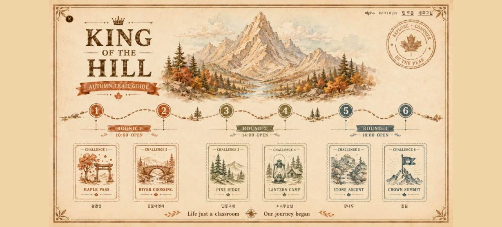
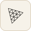
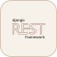
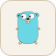
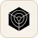

플랫폼
참가자 화면
처음 접속하면 START부터 보드판이 펼쳐집니다
영상을 불러오지 못했습니다 영상 직접 열기 ↗
주사위를 굴려 이동하고, 도착한 칸에서 문제를 고릅니다
영상을 불러오지 못했습니다 영상 직접 열기 ↗

문제 파일 다운로드, 인스턴스 실행, 플래그 제출을 한 화면에서 처리합니다

여섯 KOTH 문제를 라운드별로 열고, 게임 서버의 점수를 모아 순위에 반영했습니다
KOTH 6개 보기 ↗
동아리별 시그니처 문제와 마일리지·QR 결제를 연결했습니다
프론트 원본 화면을 로컬에서 재생한 영상 · 개발 화면 포함
AWS · GCP · Azure
여러 클라우드의 무료 크레딧을
한곳에서
클라우드 추가 결제0원
 AWS무료 크레딧
AWS무료 크레딧 Google Cloud무료 크레딧
Google Cloud무료 크레딧 Azure무료 크레딧
Azure무료 크레딧
Resource Broker
실행 자원을 한곳에
자원 통합 · 예약 · 반납문제 실행
컨테이너 · 전용 VM
필요할 때 실행하고끝나면 자원 반납
플랫폼 구성
문제 발행
GitHub Actions · GHCR
이미지와 참가자 파일 발행버전 등록
Backend
파일·환경변수·비밀값 연결문제 실행
Scheduler · Broker · Runtime
자원 예약 후 격리 환경에 배포자원 반납
Runtime · Scheduler · Broker
실제 자원을 삭제한 뒤 예약 반납
전체 구성도접기

두 트랙의 데이터 저장소를 분리하고, 공통 제어 서비스와 연결했습니다
공통 Edge와 Active/Standby 자동 승격은 설계·추가 검증 범위입니다
Contributors

팀 조율 · 플랫폼 통합 · 운영·QA


Tech Stack
Frontend
- React
- Vite
- Tailwind CSS

Three.js
Backend

Django REST- PostgreSQL
- Redis
Infrastructure
- FastAPI
- Kotlin
- Spring Boot

Go- Docker
- K3s
- Nginx
DevSecOps
- GitHub Actions

Trivy
GHCR · Gitleaks · SBOM
Monitoring
- ASP.NET Core
- Prometheus
- Grafana